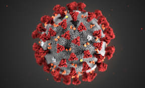

Muertes durante el COVID19
El covid-19 ha causado la muerte de casi 15 millones de personas en todo el mundo, informó este jueves la Organización Munial de la Salud (OMS), que dijo
que el número de muertes atribuidas directa o indirectamente a la pandemia fueron subestimadas.Los expertos de la organización estiman que 14,9 millones de
muertes pueden asociarse a la pandemia, un total que incluye los 6,2 millones de decesos por covid notificados oficialmente a la OMS por sus 194 países miembros.
La OMS explicó que la nueva cifra se obtuvo calculando el exceso de mortalidad durante los dos primeros años de la pandemia.El exceso e mortalidad se entiende como
la diferencia entre el número de muertes que se han producido y el número que se hubiera esperado en ausencia de la pandemia según los datos de años anteriores.

Durante el año 2021 un total de 104,513 decesos por todas las causas y un exceso de 35,353 personas al compararlo con el promedio registrado entre 2015 y 2019.
Eso significa una tasa de mortalidad del exceso de 201.9 por cada 100,000 habitantes. En comparación con el número de fallecidos del 2020, se produjo una reducción del
9.9% de decesos en esee año. Y durante el año 2022, hasta el 10 de abril se registran un total de 26,974 decesos por todas las causas y 7,156 fallecidos en exceso respecto
del promedio entre 2015 y 2019, lo que representa una tasa de mortalidad en exceso de 40.9 por cada 100,000 habitantes.